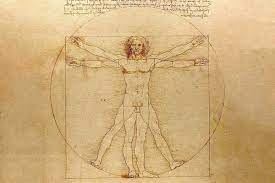

- Vitruvian Man (or Vitruvian Adam) is a sketch drawn by the renowned artist Leonardo da Vinci, found alongside his notes in one of his journals. It is believed to have been made around 1492, inspired by the proportions described by the ancient Roman architect and writer Marcus Vitruvius Pollio (80-15 BC) in his work "De Architectura," hence the name "Vitruvian Man."
- The drawing depicts a naked man with overlapping limbs, positioned inside a circle and a square drawn at the center. This drawing and the accompanying notes are often referred to as "The Proportions of Man" or less commonly as "The Proportions of the Human Body." It is exhibited at the Gallerie dell'Accademia in Venice.
- Leonardo da Vinci's Vitruvian Man is an exemplary work of science and art from the Renaissance period. It reflects Leonardo's fascination with proportions and serves as evidence of his interest in integrating and relating human beings with nature. According to the Encyclopedia Britannica, Leonardo believed that "the human body is a metaphor for the workings of the universe." Additionally, it is believed that Leonardo symbolized the material existence of man with the square and the spiritual existence with the circle, representing the two facets of humanity in the drawing.
ANASAYFAYA GERİ DÖN